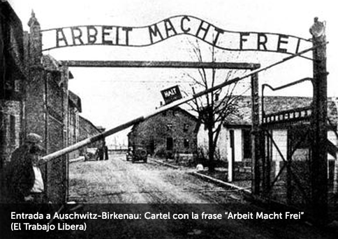
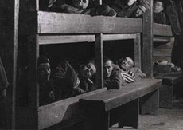
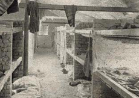
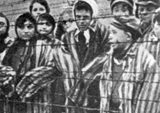
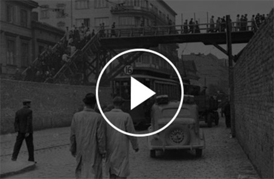

1941 - 1945
Escenarios de horror y exterminio
AUSCHWITZ
Auschwitz se convirtió en un símbolo del crimen contra la humanidad y los derechos humanos. En este lugar funcionó una verdadera industria de la muerte, que incluía trabajo esclavo, experimentos médicos con personas vivas, utilización comercial de partes del cuerpo humano de las víctimas (cabello, oro de arreglos dentales) y métodos de asesinato de gran eficiencia como lo fueron las cámaras de gas y la posterior cremación de cuerpos. Hombres, mujeres y niños fueron despojados de todo derecho y dignidad.





“Esta es en realidad la historia del planeta Auschwitz... Allí el tiempo no es un concepto como lo es en nuestro planeta...Y los habitantes de ese planeta no tenían nombres, no tenían padres y no tenían hijos. No se vestían como nos vestimos aquí...respiraban y vivían según leyes distintas de la naturaleza... Su nombre era un número...”
Katzetnik en el Juicio a Eichmann, 1961

“Los que lo vieron no pueden transmitirlo,
los que no lo vivieron no pueden comprenderlo,
los que estuvieron allí, no pueden salir,
los que no estuvieron no pueden entrar.”
Elie Wiesel
“Del mismo modo que nuestra hambre no es sensación de quien ha perdido una comida, así nuestro modo de tener frío exigiría un nombre particular...
La vida en el campo debiera haber creado un nuevo lenguaje, se siente necesidad de él para explicar lo que es trabajar todo el día al viento, con temperaturas bajo cero, no llevando encima más que el uniforme en el cuerpo, debilidad , hambre y conciencia del fin que se acerca.”
Primo Levi